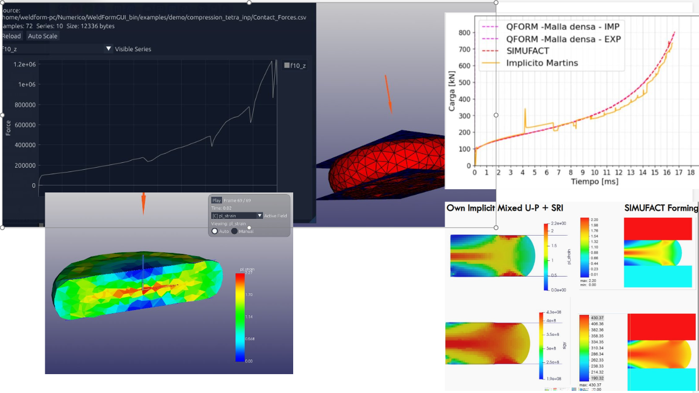
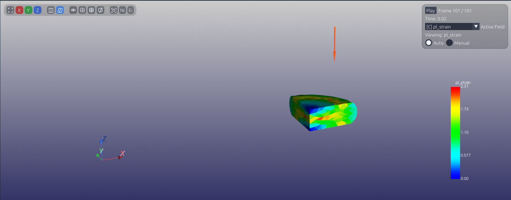

Validation Case: Cold Upsetting (Coulomb Friction)
This case is intended to validate cold open-die upsetting under large plastic deformation, with special attention to pressure-dependent contact traction, load-displacement response, and the strain field that develops during barreling.


What this benchmark checks
- Coulomb friction with
τ = μ p - Pressure-dependent contact traction in open-die upsetting
- Force evolution during upsetting
- Contact stability under large flattening
- Barreling and free-surface flow
- Plastic strain and pressure distribution trends
Notes for this page
This is a good first validation case because it is simple enough to interpret, but still exposes common failure modes: noisy contact forces, excessive distortion, unstable integration, and poor pressure transfer near the die interface.
This page is intentionally dedicated to the Coulomb formulation. It should stay separate from the shear-friction upsetting benchmark because the objective here is to validate τ = μ p, not the bulk-forming law τ = m k.
The detailed formulation notes for the implicit implementation are documented in WeldFormFEM, since this benchmark is one of the validation cases used for that solver line.
This benchmark is also related to Effect of Die Temperature and Speed on Hot Upsetting of AA2024: A Computational Numerical Study, which provides additional context for upsetting-based validation workflows.
Mesh notes
The 3D compression case starts from an initial mesh of 700 nodes and 2950 elements.
That mesh density corresponds to the 3D model.
For the 2D model, an approximate element size of 0.5 mm is used.
During remeshing, the objective is to preserve the original mesh density as much as possible instead of progressively refining or coarsening the model.
Cold upsetting benchmark summary
The 3D compression benchmark was intentionally performed using a very coarse tetrahedral mesh of about 3,000 elements to keep computational cost low for educational and demonstration purposes. Even with that coarse discretization, the overall load evolution remains in good agreement with Simufact Forming, with a relative RMSE below 5%.
The 3D case starts from an initial mesh of 700 nodes and 2950 elements, while the 2D axisymmetric model uses an approximate element size of 0.5 mm. During remeshing, the target is to preserve the original mesh density as much as possible instead of drifting toward systematic refinement or coarsening.
The quantitative comparison table and benchmark-specific error metrics are reported below for this validation case.
Benchmark results
| Benchmark | Relative RMSE [%] | Peak Load Error [%] |
|---|---|---|
| 2D Implicit Mixed U-P + SRI vs Simufact | 4.14 | 4.00 |
| 3D Implicit Mixed U-P (3k Elem) vs Simufact | 4.57 | 15.82 |
Back to benchmarks Next case: Hot Upsetting (Shear Friction)